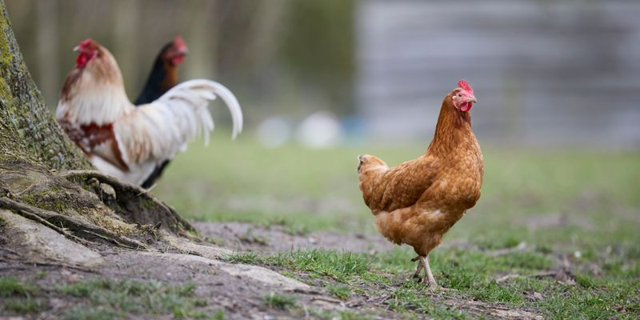
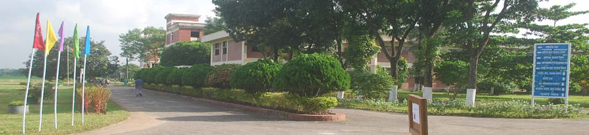
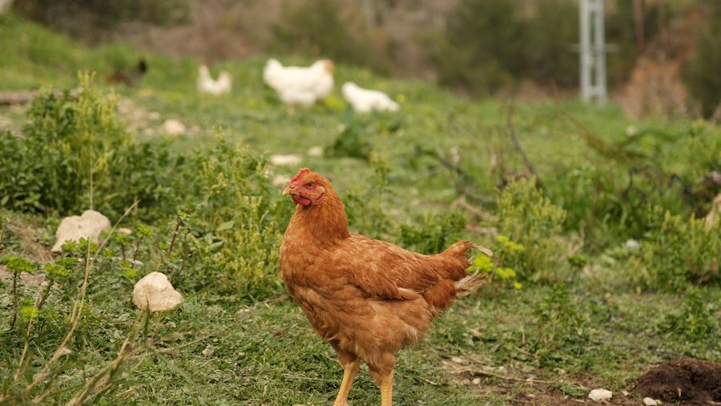
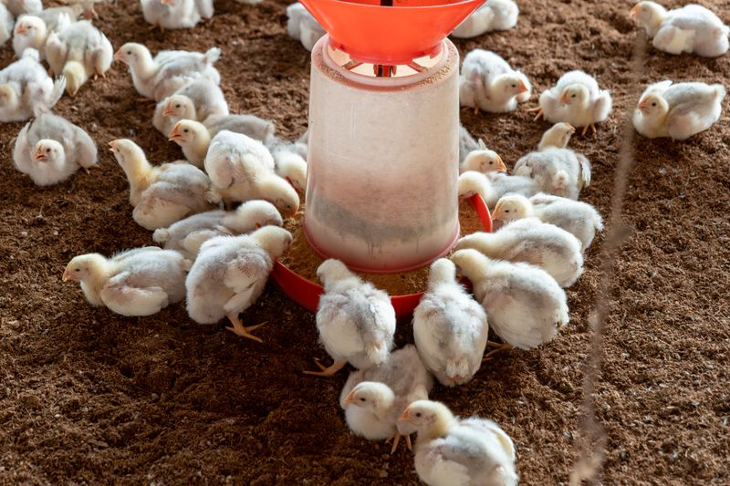
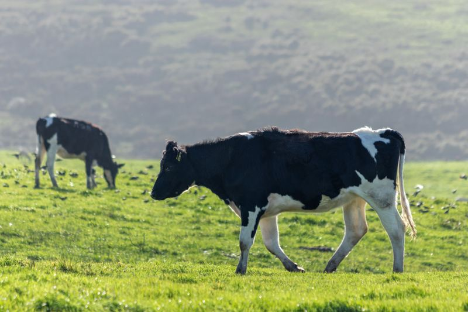
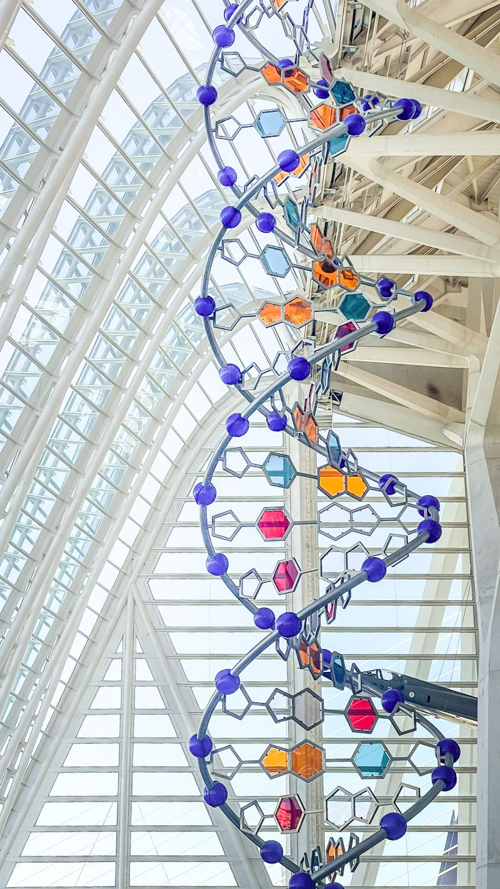

Poultry Breeding and Genetics
Selective breeding and genetic improvement of indigenous chicken and quail.
Read More
Director General (T.C.),
Bangladesh Livestock Research Institute (BLRI)
Specialization: Poultry and Animal Breeding and Reproduction

Dr. Shakila Faruque has been Director General (T.C.) of the Bangladesh Livestock Research Institute (BLRI) since 11 November 2024. She joined BLRI as a Scientific Officer in 1999.
Her main area of work is the conservation and improvement of indigenous chicken and quail through selective breeding. She was Project Director of the Scavenging (Deshi) Poultry Conservation and Development project, and has published 62 research articles in national and international journals.


Selective breeding and genetic improvement of indigenous chicken and quail.
Read More
Production performance, carcass and egg quality, and reproductive traits.
Read More
Research leadership at BLRI, with earlier work on Black Bengal goat breeding and nutrition.
Read More
Conservation of native chicken, including molecular diversity and genome studies.
Read MoreIllustrative stock photographs from Pexels.
Ukrainian Journal of Veterinary and Agricultural Sciences, 7(2), 3–7.
Scientific Data, 11(1), 1432.
SAARC Journal of Agriculture, 21(2), 207–216.
Asian-Australasian Journal of Animal Sciences, 33(11), 1732.
Tropical Agricultural Research, 26(4).
Bangladesh Agricultural University, Mymensingh
1994 (held in 1997)Bangladesh Agricultural University, Mymensingh
1999Bangladesh Agricultural University, Mymensingh
2017Illustrative photographs related to her research areas. Click a photo to view it larger.
Stock photographs from Pexels.